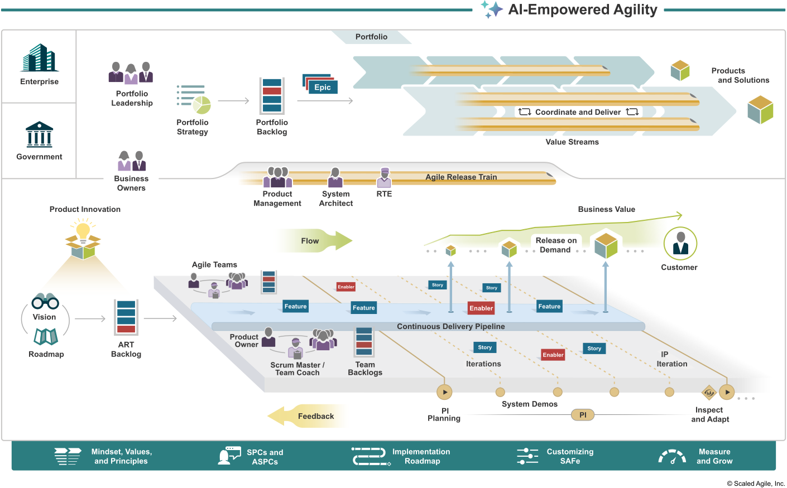

L’agilité en informatique est une vieille marotte. Le manifeste agile a été publié en 2001 ! Voici sa première ligne :
Individuals and interactions over processes and tools
Pourtant en écoutant mon entourage parler, j’ai l’impression qu’il s’agit avant tout de processus justement. Des sprints, des stand-ups, des rétro etc., contredisant le tout premier principe de l’agilité.
L’explication la plus banale, est que ces principes ne sont que des mots et qu’il faut bien les appliquer de manière concrète. Ainsi on a les fameuses méthodes Scrum ou Extreme Programming qui se revendiquent de l’agilité et dont les rituels sont associés à « agile ».
Je parlais déjà en 2016 sur ce blog démocratie en entreprise que malgré toutes les revendications d’agilité, les structures finissent par imposer un manager qui finit par imposer une priorisation et assignation des tâches. J’en attribuais la cause principale que pour la hiérarchie c’était intolérable qu’il puisse il y avoir une auto-gestion où ils ne savent pas ce qui se passe, d’où l’arrivée de contre-maîtres, qu’ils se nomment scrum masters, product owner, chef de projet, ils finissent par remplir le même rôle.
Mais ça fait déjà trois ans que je suis en prestation chez SNCF Réseau sur le projet OSRD. Je pense que c’est un projet relativement atypique pour SNCF. Il est libre, sans sous-traitance 1. enfin… comme une grosse partie de l’équipe je suis techniquement sous-traitant, mais j’ai été recruté en tant qu’humain. Ce n’est pas une ESN qui aurait fait la meilleure offre , avec une implication forte et régulière des utilisateurs.
L’organisation est officiellement en SAFe qui se présente comme du agile at scale. Voici le schéma que l’organisme qui vend ça met sur sa page d’accueil:

On est complètement dans process over individuals et donc en contradiction frontale avec le manifeste agile. Comment est-ce que ça se fait que ça marche ? Voici une tentative des choses importantes qui, pour moi, font qu’on limite la casse sur le projet OSRD:
- Ce cadre rassure la hiérarchie qui est plus habituée à du cycle en V;
- Elle force une implication de la hiérarchie à prendre position pour donner des points à tel ou tel ticket. En soi, on se fout de la valeur donnée, mais la hiérarchie est obligée d’écouter et de parler, ce qui permet un peu d’échange et d’appropriation;
- Mes collègues sont extraordinaires: les scrum master s’occupent réellement des gens et des problèmes rencontrés, les product-owners maîtrisent le produit et métier. Et aucun·e des deux ne se comporte en chef de projet donnant des ordres;
- Les rétros sont fréquentes (toutes les deux semaines) 2. désolé de les rater si souvent et servent à réellement remonter les points de frictions.
Tout n’est pas parfait, on est autour de 50, ce qui fait beaucoup de gens. Mais moi qui râle tant sur les organisations je reste bluffé d’y trouver mon compte. Donc finalement, bien utilisé, le processus SAFe peut avantageusement être utilisé pour manager la hiérarchie afin qu’elle nous permette de bien travailler.
Et ça me rend confiant pour d’autres gros projets ambitieux.